山口 琢(フリーランス)
大場 みち子(京都橘大学)
v1.1
2025-03-24
v1
2025-03-17
人の問題解決プロセス(特に読み書き)を測定・分析する研究をしてます:
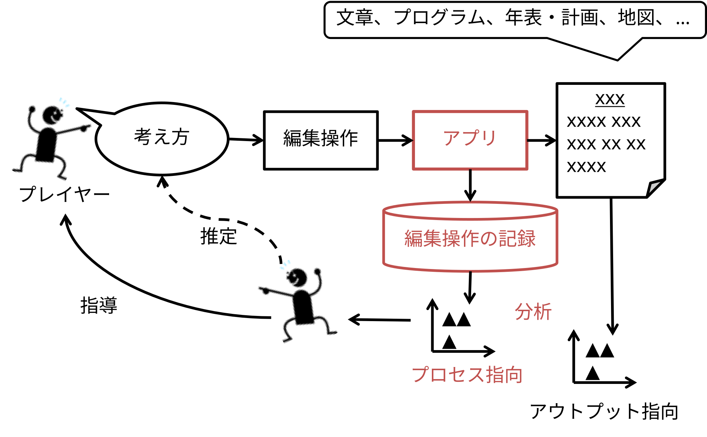
以下は、研究会の趣旨に合っているでしょうか？…
プログラミングのプロセスを評価したい。
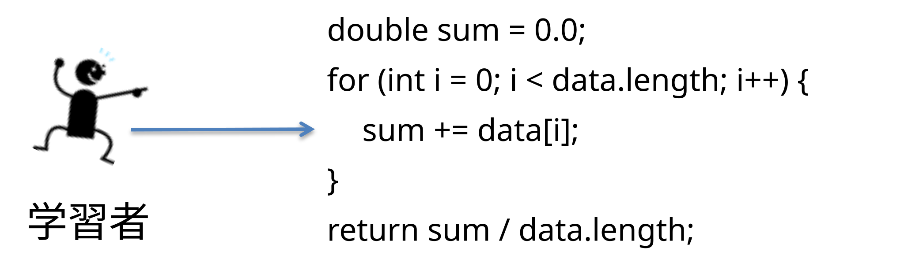
プログラミングのアプリを工夫してプロセスをデータ化
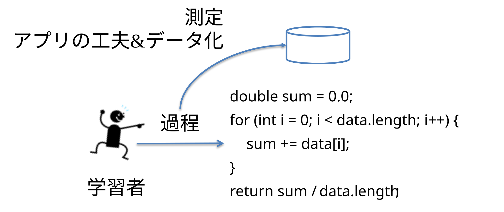
測定データを分析して推定する。
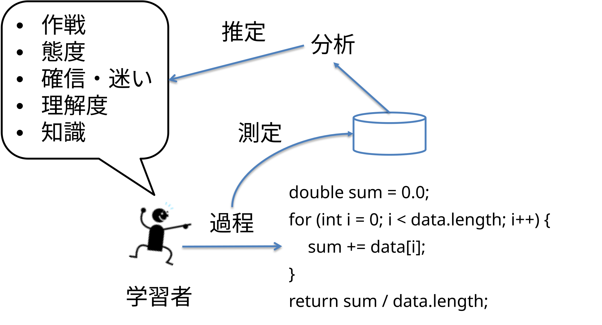
測定、分析、推定を評価
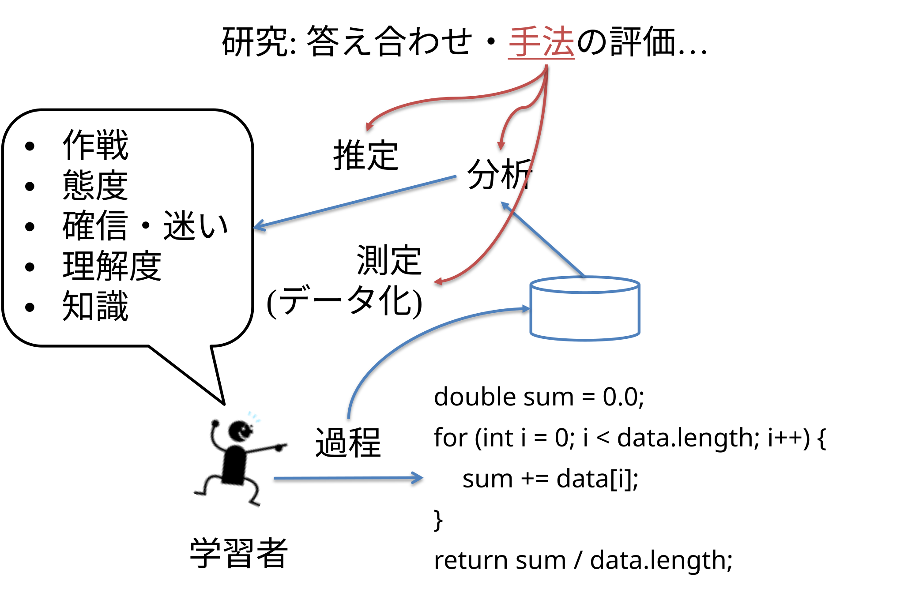
頭の中と答え合わせしたいが、できないので…
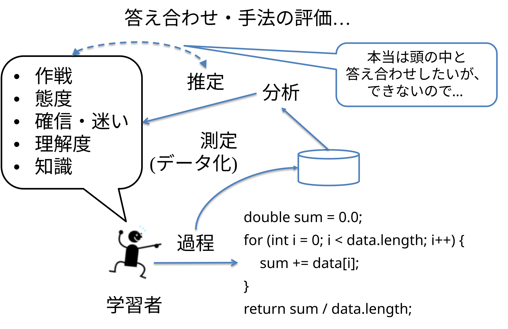
他のデータと答え合わせする。
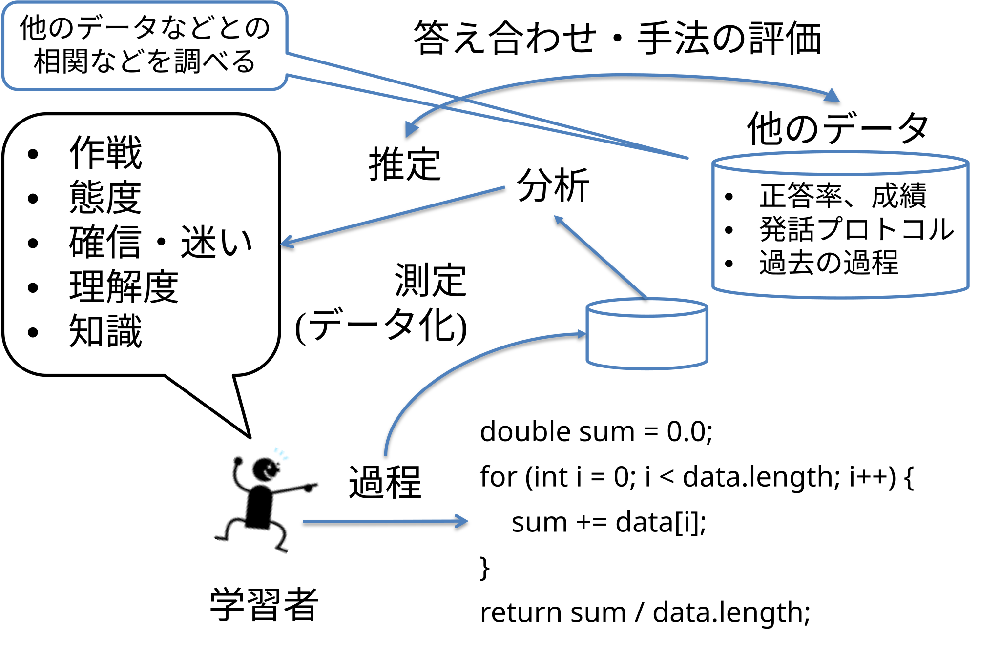
アルゴリズムが分かっているコンピューターによる問題解決プロセスならば、直接答え合わせできるだろう。
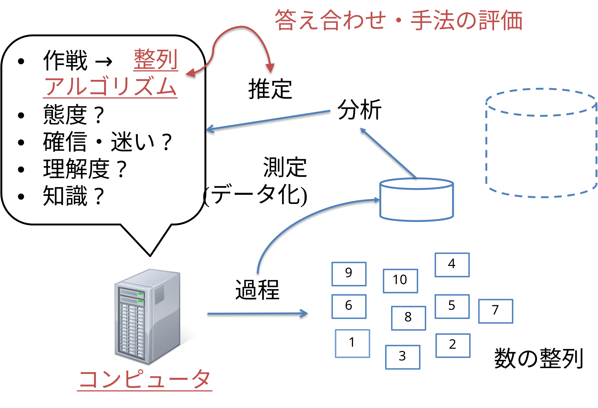
例えば「ソート 可視化」で検索すると、ソート・プロセスの進展に従ってソート対象が変化する様子を表示して、アルゴリズムの理解を助けるサイトが多数見つかる。
外から見えるように(可視化)して、処理(アルゴリズム)の理解を助ける
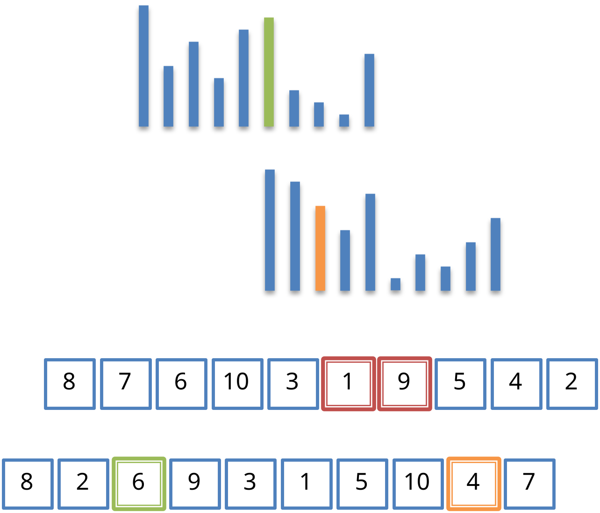
逆をやる: 外から見えるモノからプロセスを推定
問題としてはソートを取り上げて、いくつかの分析手法を試みる。
題材: 数のソート
分析手法:
検証: あるアルゴリズムで実現されている振る舞いを、別のアルゴリズムで説明できるか？
入力する問題
次のアルゴリズムを採用する。よく学習題材になるし、プログラミング言語によるコードが容易に見つかるので。
状態遷移の状態はどこか？
| アルゴリズム | 状態 |
|---|---|
| バブルソート | 交換直後の並び |
| クイックソート | 交換直後の並び |
| ヒープソート | 交換直後の並び |
| 選択ソート | 交換直後の並び |
| マージソート | マージ直後の並び |
| 挿入ソート | 挿入直後の並び |
どのアルゴリズムに、どの問題を与えても、 (1,2,3,4,5,6,7,8,9,10) を出力する。
与えられた10個の数を昇順にソートしてる
実際はヒープソートしていても、この結果をバブルソートで説明できる。
「与えられた10個の数を昇順にソートしてる」とするならば、いつも正解してる。
いつも正解してる、みんなが正答率100%、優秀である。
実際はヒープソートしていても、この結果をバブルソートで説明できる。
解答との距離の変化の分析は、
例えば、
推定:
途中で最終解答との距離が大きくなるときには、
解答者が迷っていると推定する
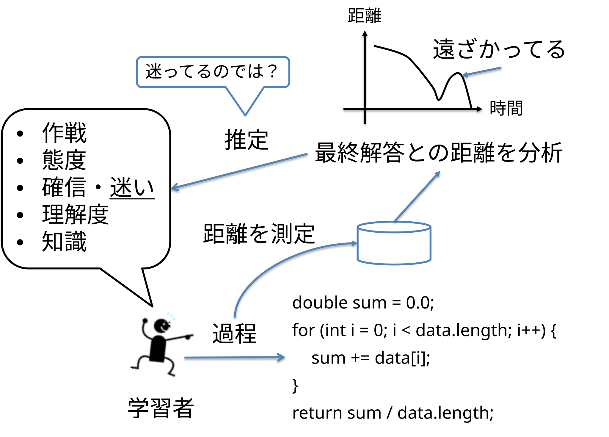
次の距離を採用する。レーベンシュタイン距離（編集距離）は研究でよく使われる。
各距離の説明:
(2,5,3,1,4)と(1,2,3,4,5)の距離は、3だけが同じで他は異なるので、4である。
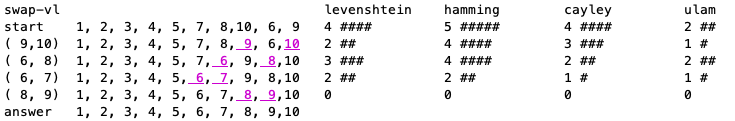
4 ##…の4が最終解答との距離、##…の長さが目安
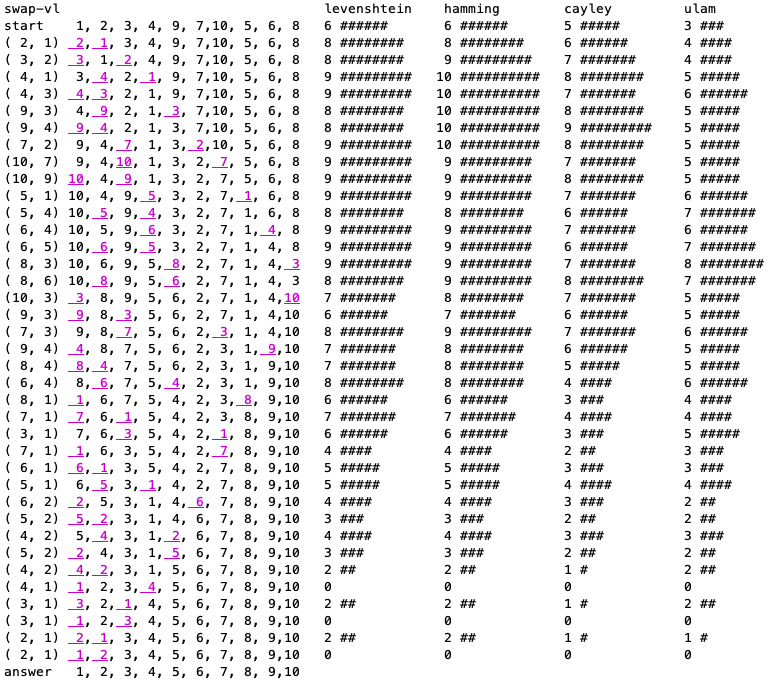
| Levenshtein距離 | Hamming距離 | Caley距離 | Ulam距離 | |||||
|---|---|---|---|---|---|---|---|---|
| 増加した問題数 | 割合 | 増加した問題数 | 割合 | 増加した問題数 | 割合 | 増加した問題数 | 割合 | |
| バブルソート | 2,743,264 | 75.6% | 3,512,825 | 96.8% | 3,624,619 | 99.9% | 0 | 0.0% |
| ヒープソート | 3,628,800 | 100.0% | 3,628,800 | 100.0% | 3,628,800 | 100.0% | 3,628,800 | 100.0% |
| 挿入ソート | 1,339,176 | 36.9% | 1,964,215 | 54.1% | 3,443,878 | 94.9% | 0 | 0.0% |
| マージソート | 1,852,755 | 51.1% | 2,432,789 | 67.0% | 3,426,453 | 94.4% | 0 | 0.0% |
| クイックソート | 1,034,478 | 28.5% | 0 | 0.0% | 1,089,872 | 30.0% | 872,908 | 24.1% |
| 選択ソート | 0 | 0.0% | 0 | 0.0% | 0 | 0.0% | 0 | 0.0% |
解くプロセスの間に、最終解答との距離が増加した問題の数と、全問題数3.6M個に対する割合。
| Levenshtein距離 | Hamming距離 | Caley距離 | Ulam距離 | |||||
|---|---|---|---|---|---|---|---|---|
| 増加した問題数 | 割合 | 増加した問題数 | 割合 | 増加した問題数 | 割合 | 増加した問題数 | 割合 | |
| バブルソート | 2,743,264 | 75.6% | 3,512,825 | 96.8% | 3,624,619 | 99.9% | 0 | 0.0% |
| ヒープソート | 3,628,800 | 100.0% | 3,628,800 | 100.0% | 3,628,800 | 100.0% | 3,628,800 | 100.0% |
| 挿入ソート | 1,339,176 | 36.9% | 1,964,215 | 54.1% | 3,443,878 | 94.9% | 0 | 0.0% |
| マージソート | 1,852,755 | 51.1% | 2,432,789 | 67.0% | 3,426,453 | 94.4% | 0 | 0.0% |
| クイックソート | 1,034,478 | 28.5% | 0 | 0.0% | 1,089,872 | 30.0% | 872,908 | 24.1% |
| 選択ソート | 0 | 0.0% | 0 | 0.0% | 0 | 0.0% | 0 | 0.0% |
実際はヒープソートしている場合に、その結果(途中で最終解答から遠ざかる現象の発生頻度)をバブルソートで説明する…のは厳しいのではないか？
しかし、
操作の時間的な共起分析は、
このように集計する動機は、テキスト分析における語の共起と同様
ある複数の操作が頻繁に時間的に近くで行われるとき、それらの操作は
と解釈できる。
問題と時間的な共起行列
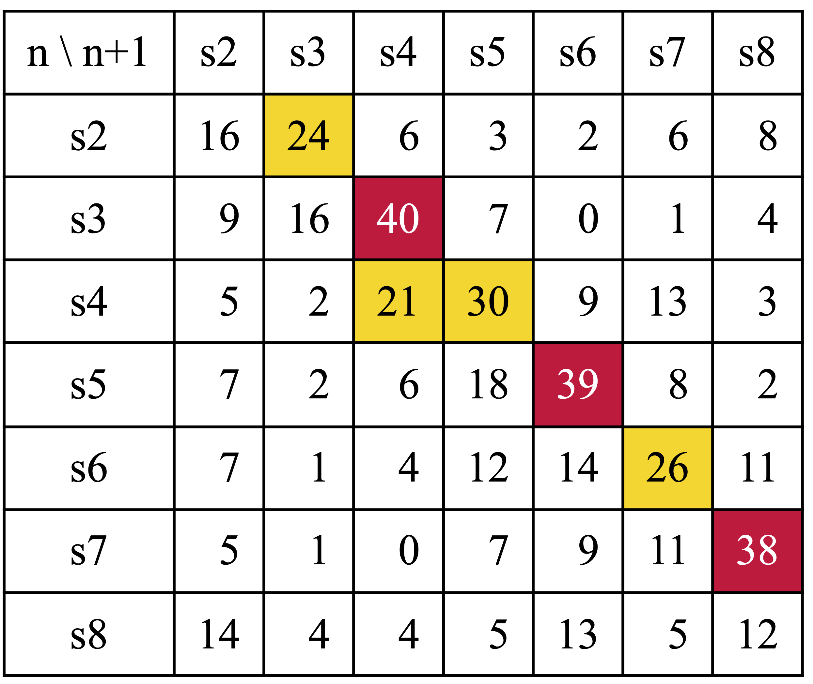
s3の次にs4を動かす回数が40回と多いのは、s3の「…2つの」とs4の「ひとつは…」を対応付けて考えるからではないか？
ソートに時間的共起分析を適用
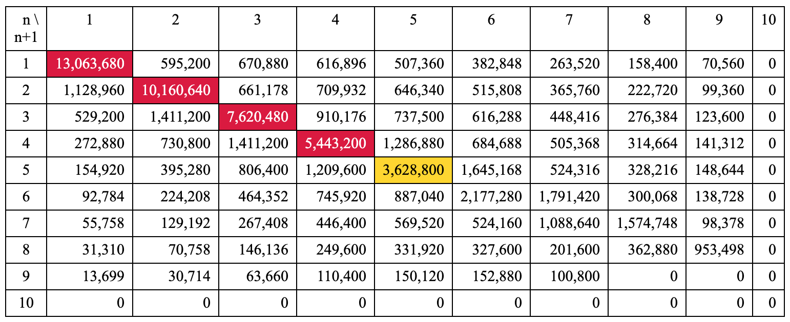
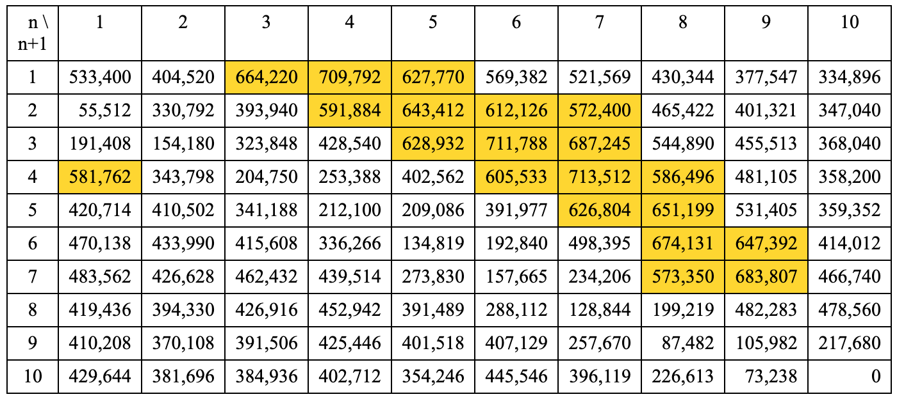
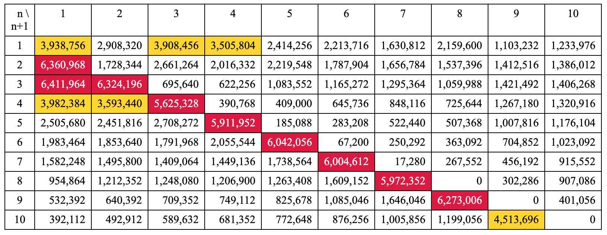
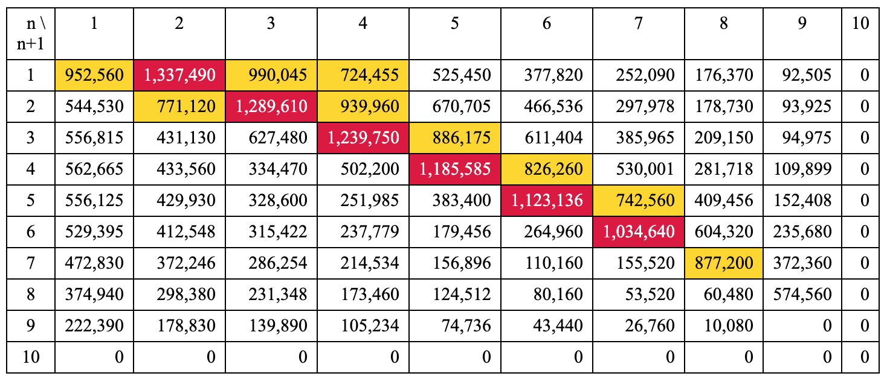
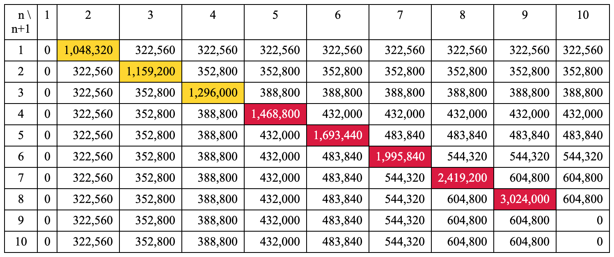
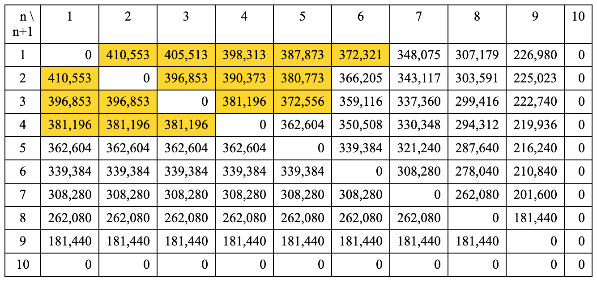
バブルソート
クイックソート
ヒープソート
マージソート
選択ソート
挿入ソート
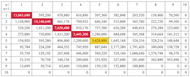
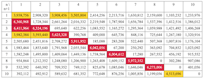
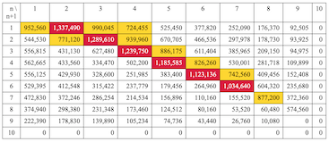
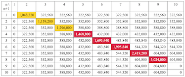
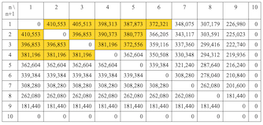
実際はヒープソートしている場合に、その結果(時間的な共起行列)をバブルソートで説明できるか …微妙
時間的な共起分析は:
コンピューターによる整列はどれも正解するが、内部的なアルゴリズムが異なると、外から観察できる並べ替え操作が異なって表現できた。
分析手法にとっての正解の存在
正解を前提としない分析
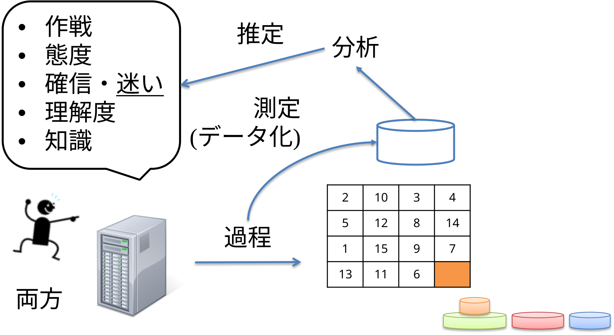